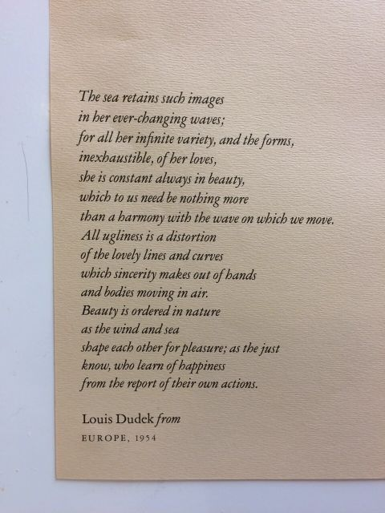

The Sea Retains Such Images

The sea retains such images
in her ever-changing waves;
for all her infinite variety, and the forms,
inexhaustible, of her loves,
she is constant always in beauty,
which to us need be nothing more
than a harmony with the wave on which we move.
All ugliness is a dotortion
of the lovely lines and curves
which sincerity makes ouf ot hands
and bodies moving in air.
Beauty is ordered in nature
as the wind and sea
shape each other for pleasure; as the just
know, who learn of happiness
from the report of their own actions.
- Louis Dudek from Europe, 1954